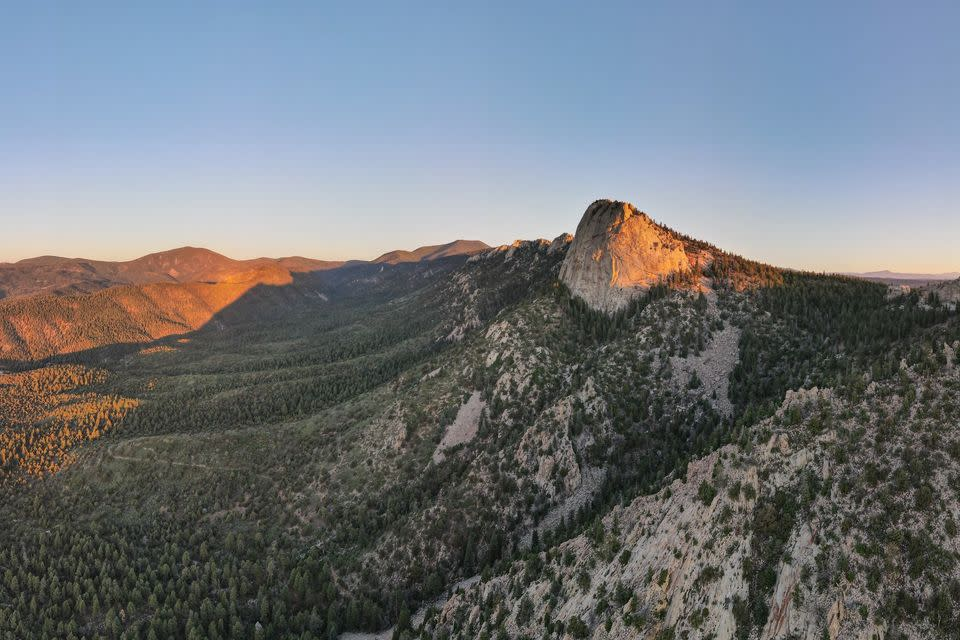

Philmont

What is philmont?
Philmont is an adventure where you go hiking with your friends to several different
points of interest, including camps where you can stay and do activities on your way
through the mountain. Your hike can either be easily done with several fun activities,
or really challenging where you have to climb up to the tallest peaks. But, me and my
group are doing something inbetween.
What are Me and my friends doing for philmont?
me and my friends are going to philmont ourselves, going on a 64 mile treck through
several different places with many activities to have as much fun as we can! Even
though we have a decently long treck, im sure that there will be little to no difficulties
with being able to keep everyone happy.
What to Pack
For Philmont you should pack lots of stuff, but mainly pack things that you think are really
neccessary because packing uneccesary stuff adds more weight to your bag, which makes
it harder to go further due to how much weight you now have on you. i recomend that you at
least get a few of these things:
Rain gear, Meskit with just a bowl and utensil, at least 3-5 changes to clothes, depending on
how long your trip is, a flashlight, and at least 4 liters of water at all times, because you
can usually fill up at staff camps.